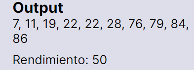
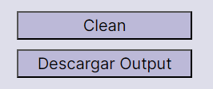

Sobre los botones
Los botones intentan darte una idea clara de su funcion con sus titulos, pero de igual forma te tenemos un listado para que seas todo un experto usando nuestra web.
Al presionar cualquiera de los botones de sort podras visualizar el recorrido del ordenamiento, obtendras tu lista ordenada y su rendimiento |
Al presionar el cuadrado al lado de "input normal" podras colocar tu propia lista, cargar una lista en formato txt, ademas que desactivaras la funciond del input aleatorio |
||
Al presionar el cuadrado al lado de "Input aleatorio" desacativaras las funciones del input normal, podras generar el rango minimo, maximo y el tamaño de tu lista, ademas de tener el boton para generar la lista |
 | Aqui podras visualizar el resultado final de tu output siendo tu lista ordenada y ademas el rendimiento del sort. |
|
Aqui podras apreciar el ordenamiento grafico y dinamico cuando presiones cualquier boton de los sorts |
 | Al presionar el boton "clean" eliminaras todo el contenido creado y pre estableceras la configuracion inicial de la pagina, al presionar el boton de "Descargar" podras tener en formato txt tu lista ordenada |
Preguntas mas frecuentes
Como llenar la lista en output normal
Para llenar la lista satisfactoriamente hay que seguir una regla simple, debemos separar cada numero de la lista con comas (,) caso contrario no podras realizar ninguna funcion de los botones.